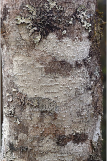
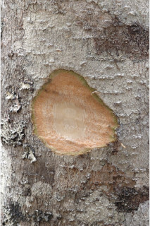
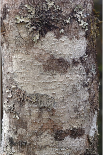
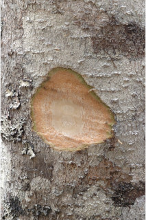
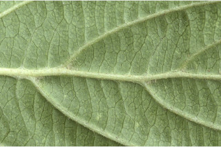
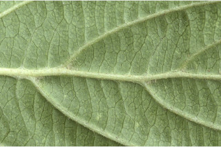
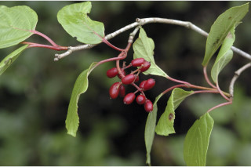
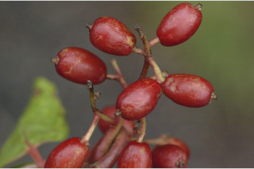
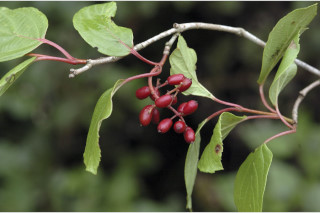
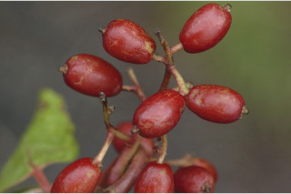

Small trees, up to 8 m tall.
8 ಮೀ. ಎತ್ತರ ಬೆಳೆಯುವ ಸಣ್ಣ ಮರಗಳು.
8 മീറ്റര് വരെ ഉയരത്തില് വളരുന്ന ചെറുമരങ്ങള്.
சிறிய மரம் 8 மீ. உயரம் வரை வளரக்கூடியது
Bark horizontally lenticellate; blaze slightly reddish brown.
ತೊಗಟೆ ಅಡ್ಡವಾಗಿ ಜೋಡಣೆಗೊಂಡ ವಾಯುವಿನಿಮಯ ಬೆಂಡು ರಂಧ್ರಗಳ ಸಮೇತವಾಗಿರುತ್ತದೆ; ಕಚ್ಚು ಮಾಡಿದ ಜಾಗ ಹೆಚ್ಚೂಕಡಿಮೆ ಕೆಂಪು ಮಿಶ್ರಿತ ಕಂದು ಬಣ್ಣದಲ್ಲಿರುತ್ತದೆ.
തിലശ്ചീനമായി ശ്വസനരന്ധ്രങ്ങളോട് കൂടിയ പുറംതൊലി; വെട്ടുപാടിന് ഇളം ചുവപ്പ് കലര്ന്ന തവിട്ട് നിറം.
மரத்தின் பட்டை லெண்டிசெல்லேட்லேட்; உள்பட்டை சிறிது சிகப்பு கலந்த ப்ரவுன் நிறம்
Young branchlets terete, villous.
ಎಲೆಯ ಕಿರುಕೊಂಬೆಗಳು ದುಂಡಾಗಿದ್ದು ಉದ್ದವಾದ ಮೃದು ಕೂದಲುಗಳ ಸಮೇತವಿರುತ್ತವೆ.
ഇളം ഉപശാഖകള് ഉരുണ്ടതും നിറയെ രോമാവൃതവുമാണ്.
சிறு நுனிகிளைகள் குறுக்குவெட்டுத் தோற்றத்தில் வளையமானது, உரோமங்களுடையது
Leaves simple, opposite, decussate; stipule lanceolate, caducous; petiole reddish, to 3 cm long, canaliculate; lamina to 12 x 8 cm, broadly elliptic to obovate, apex acute-acuminate, base cuneate to rounded, margin distally serrate to dentate, all nerves impressed above; midrib canaliculate; secondary_nerves 5-7 pairs, subopposite; tertiary_nerves percurrent.
ಎಲೆಗಳು ಸರಳವಾಗಿದ್ದು, ಅಭಿಮುಖಿ ಮತ್ತು ಕತ್ತಯಾಕಾರದಲ್ಲಿ ಜೋಡನೆಯಾಗಿರುತ್ತವೆ; ಕಾವಿನೆಲೆಗಳು ಭರ್ಜಿಯಾಕಾರದಲ್ಲಿದ್ದು ಉದುರಿ ಹೋಗುವಂತಹವುಗಳಾಗಿರುತ್ತವೆ; ತೊಟ್ಟು ಕೆಂಪಾಗಿದ್ದು, ಕಾಲುವೆಗೆರೆಗಳ ಸಮೇತವಿದ್ದು 3 ಸೆಂ.ಮೀ.ವರೆಗಿನ ಉದ್ದ ಹೊಂದಿರುತ್ತದೆ; ಪತ್ರಗಳ ಗಾತ್ರ 12 x 8 ಸೆ.ಮೀ., ವಿಶಾಲವಾದ ಅಂಡವೃತ್ತದಿಂದ ಹಿಡಿದು ಬುಗುರಿಯ ಆಕಾರವನ್ನು ಹೊಂದಿರುವ ಪತ್ರಗಳು ಚೂಪಾದ – ಕ್ರಮೇಣ ಚೂಪಾಗುವ ಮಾದರಿಯ ಬುಡ ಹೊಂದಿರುತ್ತವೆ, ಅಂಚು ಅಂತರ ಹೊಂದಿದ ಗರಗಸ ದಂತಿತ ಅಥವಾ ದಂತಿತವಾದ ಮಾದರಿಯಲ್ಲಿರುತ್ತದೆ. ಎಲ್ಲಾ ನಾಳಗಳು ಪತ್ರದ ಮೇಲ್ಭಾಗದಲ್ಲಿ ಅಚ್ಚೊತ್ತಿದಂತಿರುತ್ತವೆ;ಮಧ್ಯನಾಳಗಳು ಕಾಲುವೆಗೆರೆ ಸಮೇತವಿರುತ್ತವೆ. ಎರಡನೇ ದರ್ಜೆಯ ನಾಳಗಳು ಉಪ-ಅಭಿಮುಖಿಗಳಾಗಿದ್ದು 5 ರಿಂದ 7 ಜೋಡಿಗಳಿರುತ್ತವೆ; ಮೂರನೇ ದರ್ಜೆಯ ನಾಳಗಳು ಎಲೆದಿಂಡಿಗೆ ಅಡ್ಡವಾಗಿ ಕೂಡುತ್ತವೆ.
സമ്മുഖ ഡെക്കുസേറ്റ് ക്രമത്തിലുളള ലഘുപത്രങ്ങള്; അനുപര്ണ്ണങ്ങള്ക്ക് കുന്താകാരം, എളുപ്പം കൊഴിഞ്ഞുവീഴുന്നതുമാണ്; ഇലഞെട്ട് ചുവപ്പുനിറത്തിലാണ്, 3 സെ.മീ വരെ നീളമുളളതും, ചലോട് കൂടിയതുമാണ്; പത്രഫലകത്തിന് 12 സെ. മീ വരെ നീളവും 8 സെ. മീ വരെ വീതിയും, വീതിയേറിയ ദീര്ഘവൃത്താകാരം മുതല് അപഅണ്ഡാകാരംവരെയും, പത്രാഗ്രം കൂര്ത്തവാലോട് കൂടിയതും, പത്രാധാരം ആപ്പാകാരം മുതല് വൃത്താകാരം വരെയുമാണ്; അരികുകള് പിന്നറ്റത്തായി ദന്തിതമോ ദന്തുരമോ ആണ്, എല്ലാ സിരകളും മുകളില് വ്യക്തമാണ്; മുഖ്യസിര ചാലോട് കൂടിയതാണ്; ദ്വിതീയ ഞരമ്പുകള് 5 മുതല് 7 വരെ ജോഡികള്, ഉപസമ്മുഖമാണ്; ത്രിതീയ ഞരമ്പുകള് പെര്കറന്റ് ആണ്.
இலைகள் தனித்தவை, எதிரடுக்கமானவை, குறுக்குமறுக்கமானவை; இலையடிச்செதில் ஈட்டி வடிவம் கொண்டது, உதிரக்கூடியது; இலைக்காம்பு சிவப்பு நிறமானது, 3 செ.மீ. வரை நீளமானது, குறுக்குவெட்டுத் தோற்றத்தில் கேனாலிகுலேட்; இலை அலகு 12 X 8 செ.மீ., அகன்ற நீள்வட்டம் முதல் தலைகீழ் முட்டை வடிவம், அலகின் நுனி கூரியது- அதிக்கூரியது, அலகின் தளம் ஆப்பு வடிவம் முதல் வட்டமானது, அலகின் விளிம்பு ரம்ப பற்கள் முதல் விளிம்பு நோக்கிய பெரிய பற்களுடையது, எல்லா நரம்புகளும் மேற்பரப்பில் பள்ளமானது; மையநரம்பு மேற்பரப்பில் அலகின் பரப்பைவிட பள்ளமானது; இரண்டாம் நிலை நரம்புகள் 5-7 ஜோடிகள், கிட்டதட்ட எதிரானவை, மூன்றாம் நிலை நரம்புகள் பெர்க்கரண்ட்
Inflorescence in drooping panicles; flowers white.
ಪುಷ್ಪಮಂಜರಿಗಳು ಇಳಿ ಬೀಳುವ, ಕವಲೊಡೆದ ಮಂಜರಿ ಮಾದರಿಯವು; ಹೂಗಳು ಶ್ವೇತ ವರ್ಣದವು.
പൂങ്കുലകള് തൂങ്ങിക്കിടക്കുന്ന പാനിക്കിളുകളാണ്; പൂക്കള്ക്ക് വെളുത്ത നിറം.
மஞ்சரி தொங்கிய பேனிக்கிள்; மலர்கள் வெள்ளை நிறம்.
Drupe, red, oblong, 1.5 x 0.8 cm; seed one, oblong, 1 cm compressed with a median, T-shaped ventral groove.
ಡ್ರೂಪುಗಳು ಕೆಂಪಾಗಿದ್ದು, ಚತುರಸ್ರಾಕಾರ ಹೊಂದಿದ್ದು, ಗಾತ್ರದಲ್ಲಿ 1.5 x 0.8 ಸೆಂ.ಮೀ. ಇರುತ್ತದೆ; ಬೀಜ ಒಂದಿದ್ದು ಚತುರಸ್ರಾಕಾರ ಹಾಗೂ 1 ಸೆಂ.ಮೀ. ಗಾತ್ರ ಹೊಂದಿದ್ದು ಸಂಕುಚಿತವಾಗಿದ್ದು, ಮಧ್ಯಜನಿತವಾದ ‘T ‘ಆಕಾರದ ತೋಡು ಗುರುತನ್ನು ಹೊಂದಿರುತ್ತದೆ.
1.5 സെ.മീ നീളവും 0.8 സെ.മീ വീതിയുമുളള, ആയതാകാരമുളള, ചുവന്ന കായ ആഭ്രകമാണ്; മധ്യത്തിലായി `ഠ' ആകൃതിയുളള ഉള്ചാലോട് കൂടിയതും 1 സെ. മീ നീളമുളളതും പരന്നതുമായ ഒറ്റവിത്ത് മാത്രം.
உள்ளோட்டுத்தசைகனி (ட்ரூப்), சிவப்பு நிறம், நீள்சதுரம் 1.5 X 0.8 செ.மீ. ஒரு விதை கொண்டது, நீள்சதுரம் 1 செ.மீ. ஆங்கில எழுத்து T-வடிவ நீள்வாக்கில் பள்ளமுடையது.
 





 



 


